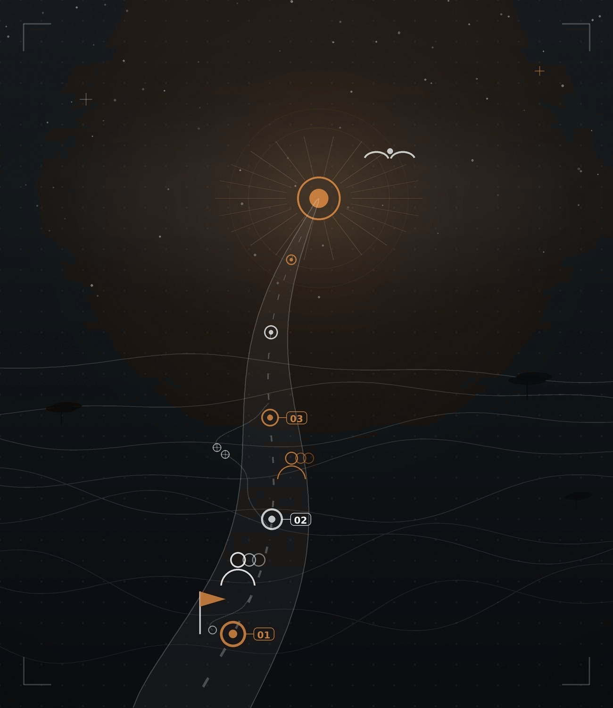
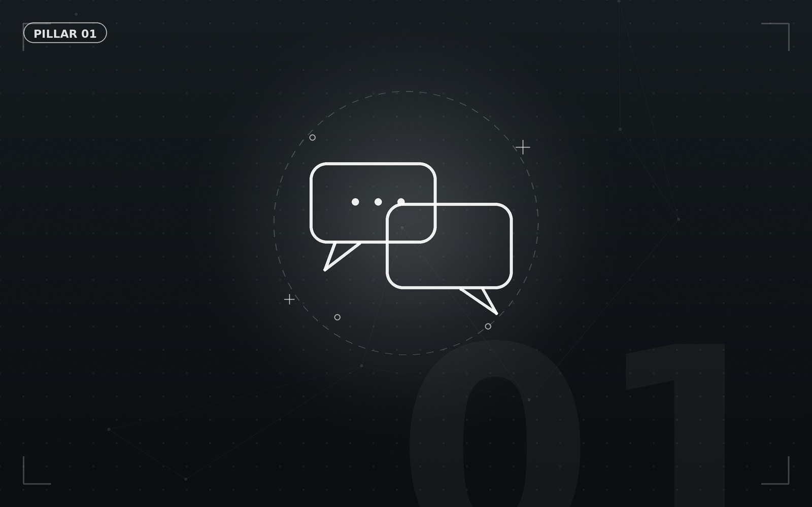
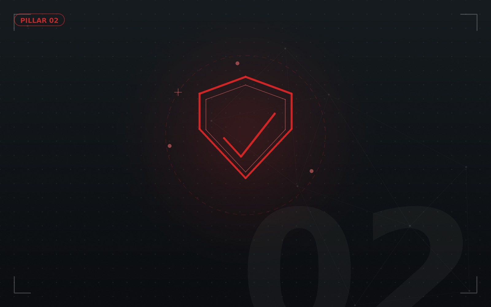
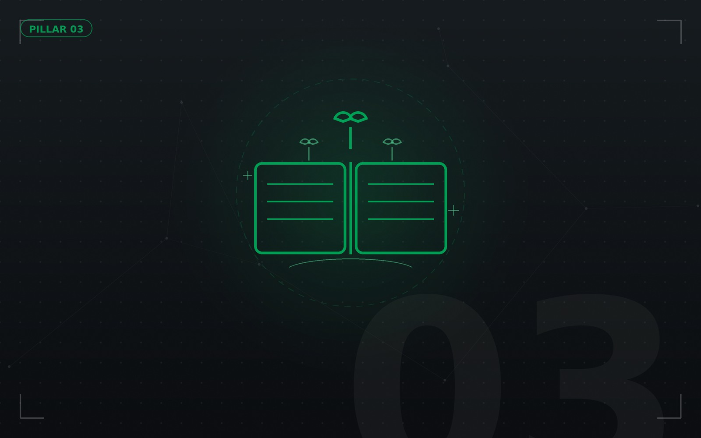
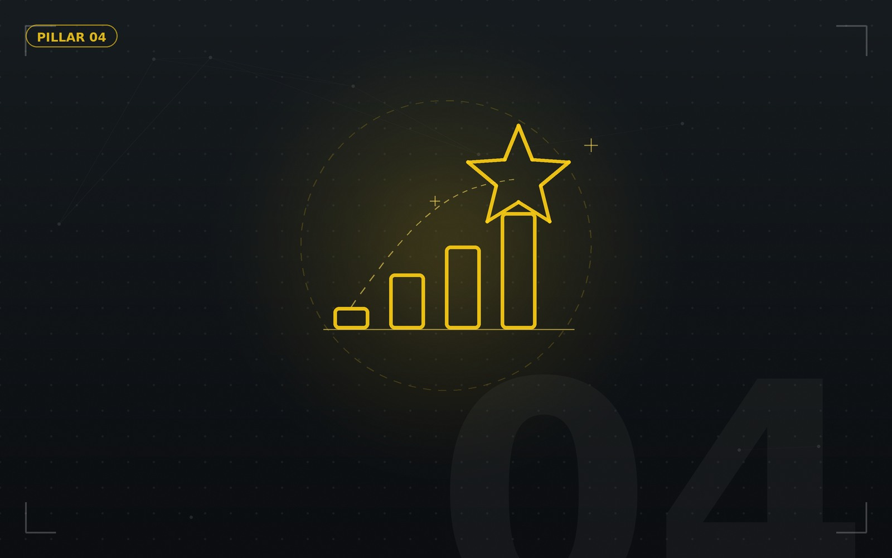
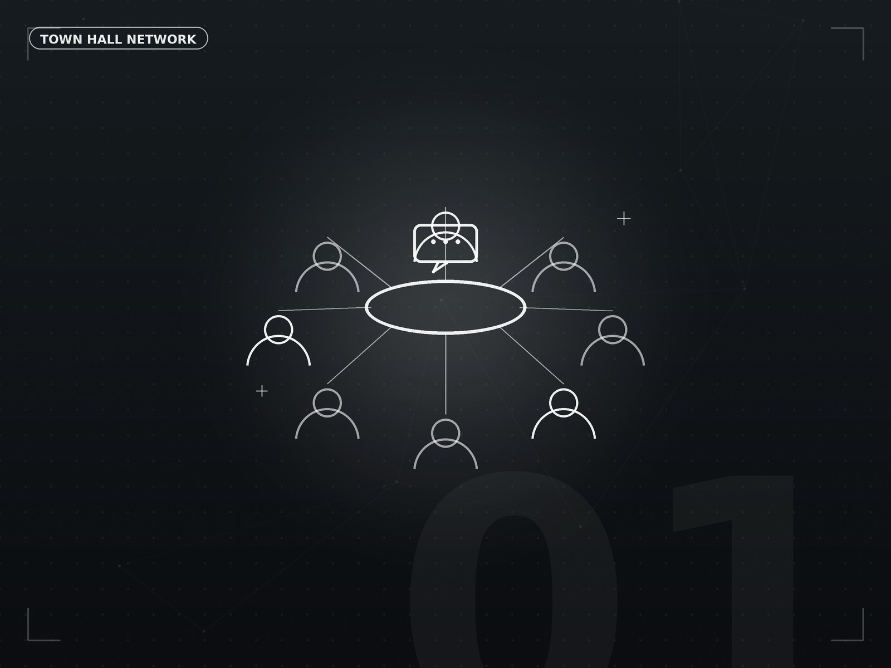
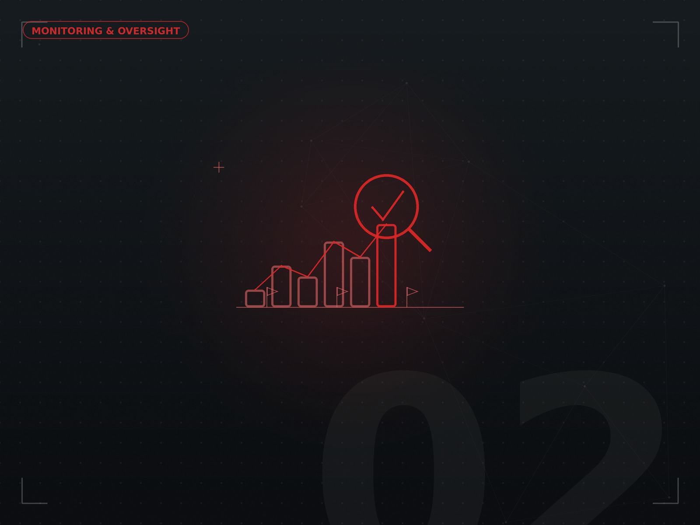
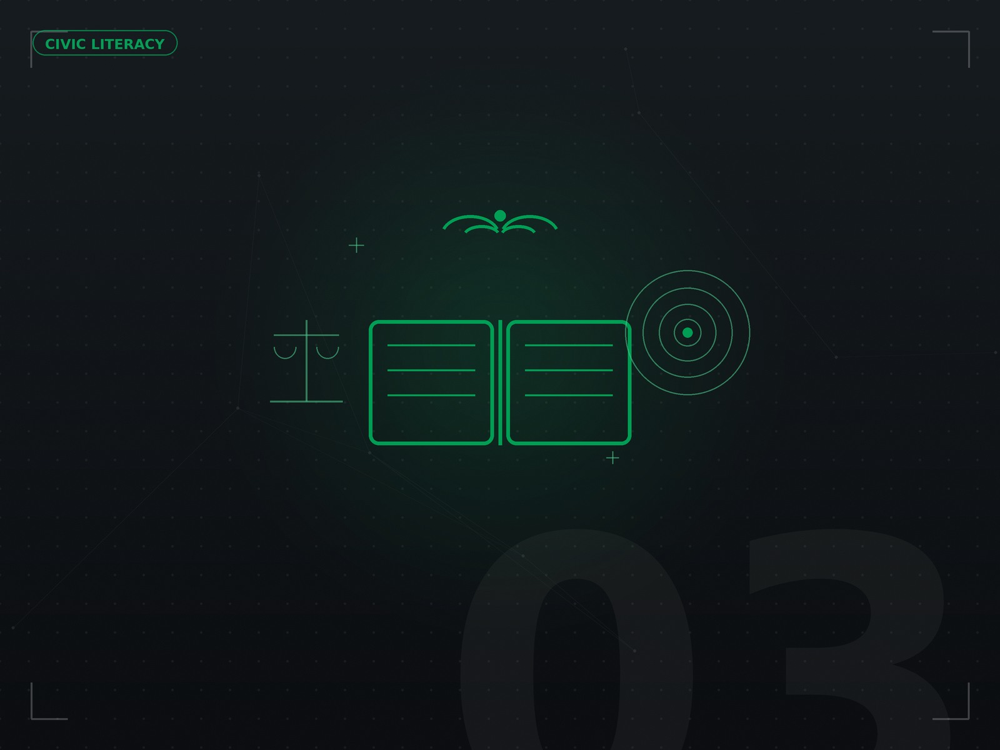
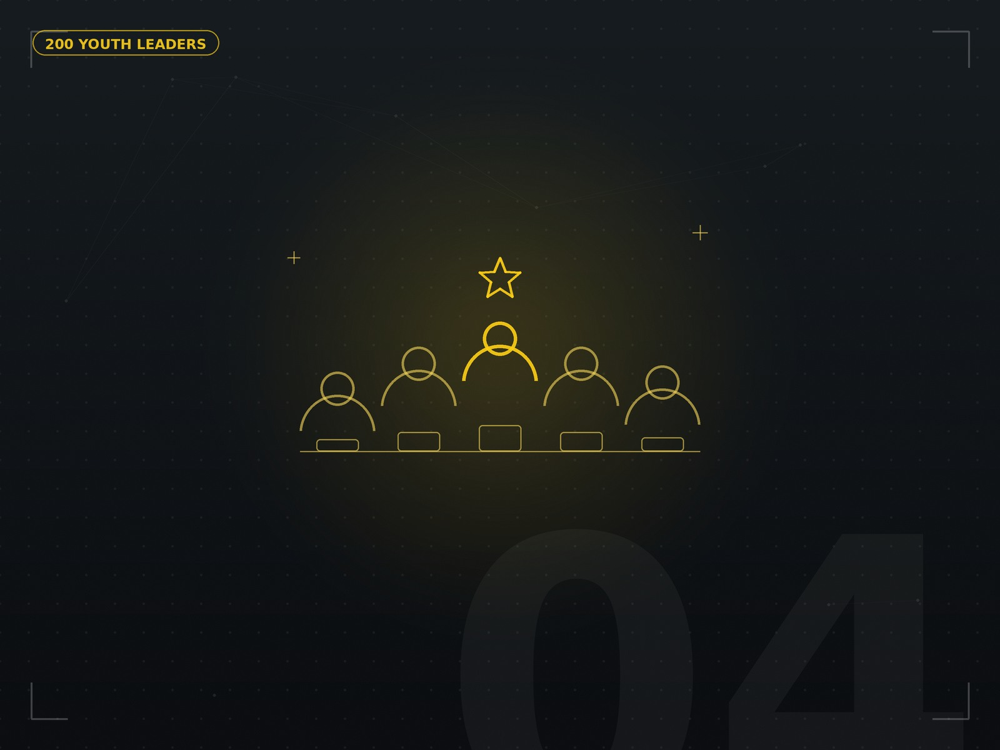

Actionable pathways to sustainable peace.
Our programs replace reactive crisis management with proactive, youth-driven peacebuilding, ongoing civic education and constructive institutional engagement.

Integrated SystemFour pillars driving long-term change.
Each program addresses a key dimension of community cohesion, linking citizens with decision-makers to build lasting trust.

Citizen–Leader Dialogue
Monthly structured forums bringing together youth, elders and local government officials to resolve grassroots issues constructively.

Youth-Led Accountability
Equipping young leaders with practical monitoring tools to track public commitments and participate in local governance processes.

Civic Education & Peacebuilding
Combining constitutional literacy with early-warning conflict mitigation techniques to diffuse tensions before escalation.

Youth Leadership Accelerator
Training 200 high-potential young peacebuilders during our pilot phase to champion community dialogue initiatives across Kenya.
How the work unfolds on the ground.
Citizen–Leader Dialogue Forums
Dialogue is our primary instrument for preventive peacebuilding. We build permanent, trusted channels for regular interaction.
- Monthly town hall gatherings across sub-counties.
- Balanced inclusion of youth, interfaith leaders and elders.
- Joint resolution tracking and action planning.

Youth-Led Accountability Mechanisms
Shifting from confrontation to constructive oversight by training youth in policy analysis, budget tracking and public participation.
- Community scorecards for public service tracking.
- Sub-county policy petitions and public hearings.
- Digital reporting tools for local infrastructure development.

Civic Education & Early Warning
Proactive education aimed at dispelling misinformation and fostering understanding of constitutional rights and responsibilities.
- Grassroots civic literacy toolkits translated into local dialects.
- Early-warning indicators for potential community disputes.
- Peace journalism and social media literacy training.

Youth Leadership Cohorts
Building a sustained network of certified youth facilitators qualified to lead mediation, dialogue and community organising.
- 200 pilot youth leaders across 4 primary counties.
- Intensive training in conflict resolution and facilitation.
- Mentorship from seasoned peacebuilders and civic advocates.
